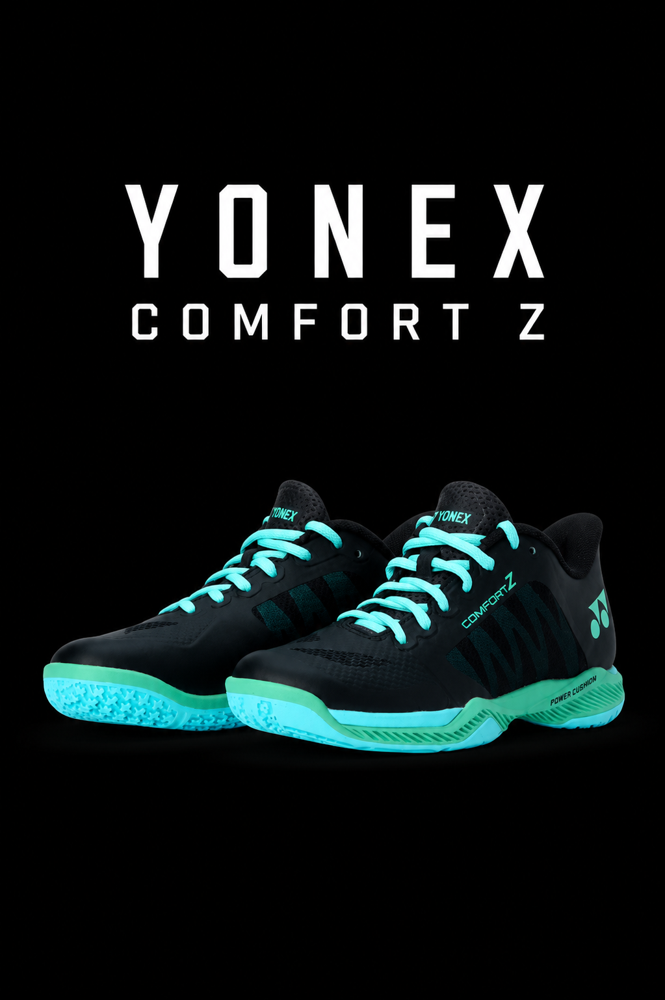

YONEX COMFORT Z

The Yonex Power Cushion Comfort Z (Women's) is a premium indoor court shoe specifically designed for elite-level
badminton players. It prioritizes maximum shock absorption, court stability, and a roomier fit. The shoe is
highly rated for reducing foot and knee fatigue during intense, multi-hour matches.
KEY TECHNOLOGIES:
- POWER CUSHION+: Delivers exceptional shock absorption and energy return, reducing impact
while propelling you into your next step.
- 3D POWER GRAPHITE SHEET: A carbon plate embedded in the sole that reinforces the mid-foot,
preventing twisting during quick directional changes.
- INNER BOOTIE DESIGN: Integrates a soft knit bootie instead of a traditional tongue,
creating a snug, pressure-free fit that wraps securely around the ankle.
- RADIAL BLADE SOLE: The sole features a unique windmill pattern that disperses weight and
boosts grip by about 3% for quick stops and dashes.